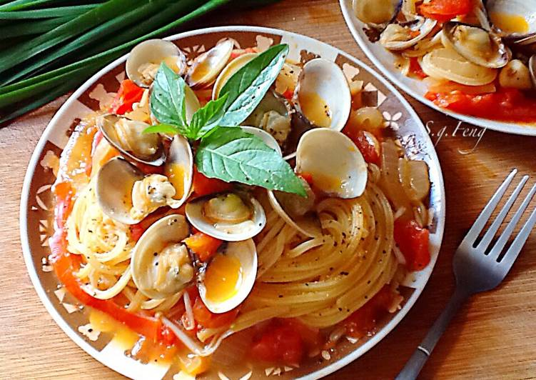

番茄蛤蠣義大利麵
1.番茄切小塊，洋蔥、大蒜切末，辣椒切片，九層塔切絲，備用。
2.取一深鍋裝水，迨煮沸後，加鹽，放入義大利麵，約煮七分鐘。撈起後，置於容器內，淋少許橄欖油，稍加攪拌。
3.平底鍋加熱後，以橄欖油炒洋蔥末、大蒜末、辣椒片，爆香。
4.再倒入蛤蜊、白酒以及一些煮麵水拌煮。
5.再續入番茄塊、九層塔絲拌炒。
6.將剛煮好的義大利倒入平底鍋中，灑點黑胡椒翻炒即可。
7.裝盤後，可灑點乾羅勒碎葉，放上九層塔葉點綴。
◎如果擔心蛤蜊煮過頭，可在開殼時先挑起，最後再放回鍋中炒一下。

戈登拉姆齊
烤雞腿
蘋果塔
心得